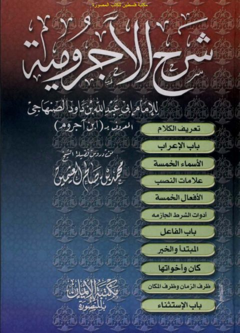
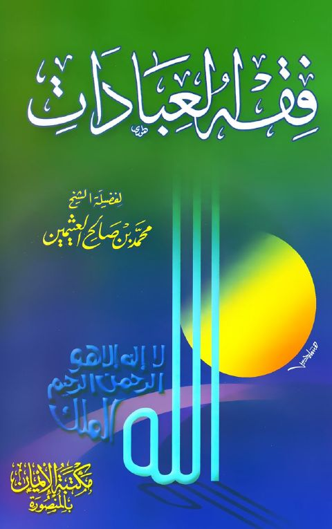
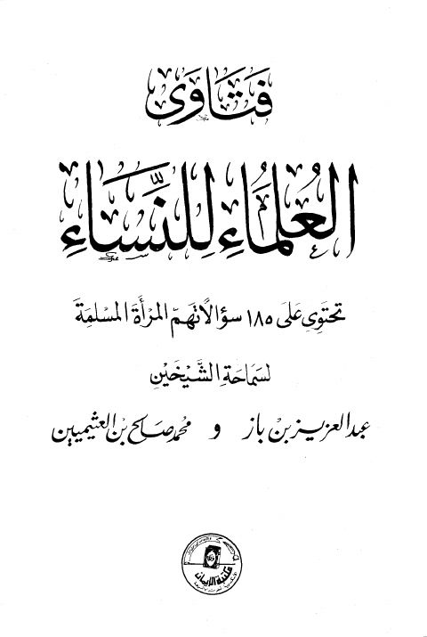
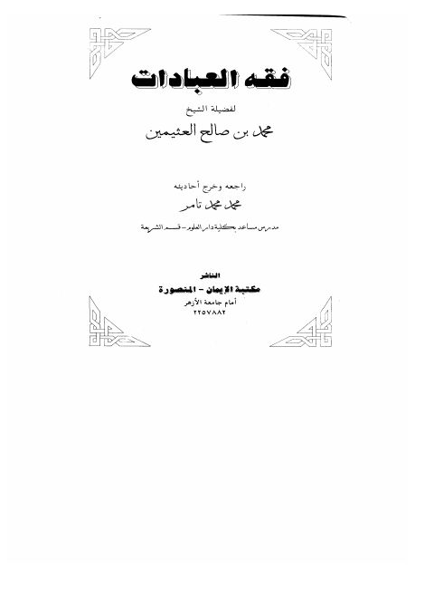

مكتبة الإيمان
Publisher
Resources

شرح الآجرومية من دروس فضيلة الشيخ مجمد بن صالح بن عثيمين شرح الآجرومية من دروس فضيلة الشيخ مجمد بن صالح بن عثيمين محمد بن صالح بن عثيمين
فقه العبادات فقه العبادات محمد بن صالح العثيمين
فتاوى العلماء للنساء تحتوي على 185 سؤالا تهم المرأة المسلمة فتاوى العلماء للنساء تحتوي على 185 سؤالا تهم المرأة المسلمة عبد العزيز بن باز • محمد بن صالح العثيمين فقه وفتاوى البيوع ويليه رسالة في حكم البيع بالتقسيط
فقه وفتاوى البيوع ويليه رسالة في حكم البيع بالتقسيط
عبد العزيز بن باز • السعدي • ابن عثيمين • الفوزان
فقه وفتاوى البيوع ويليه رسالة في حكم البيع بالتقسيط
فقه وفتاوى البيوع ويليه رسالة في حكم البيع بالتقسيط
عبد العزيز بن باز • السعدي • ابن عثيمين • الفوزان

فقه العبادات- تامر فقه العبادات- تامر محمد بن صالح العثيمين